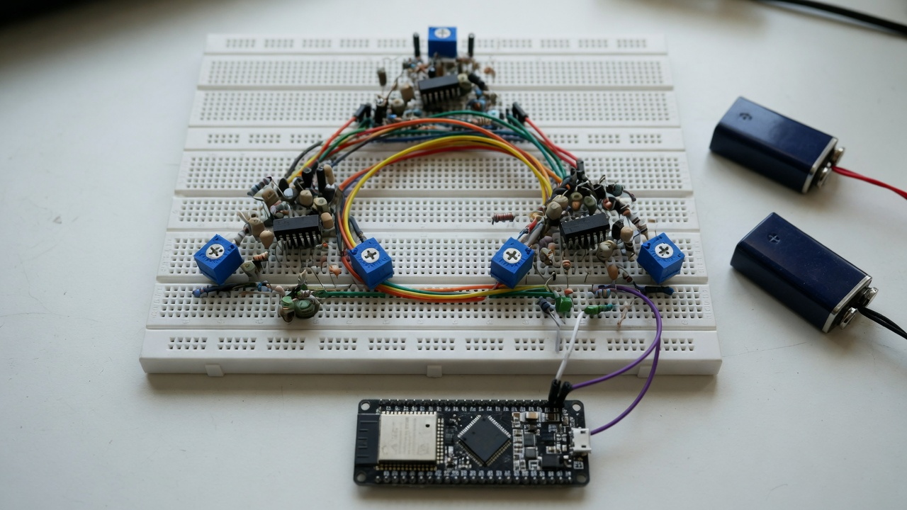
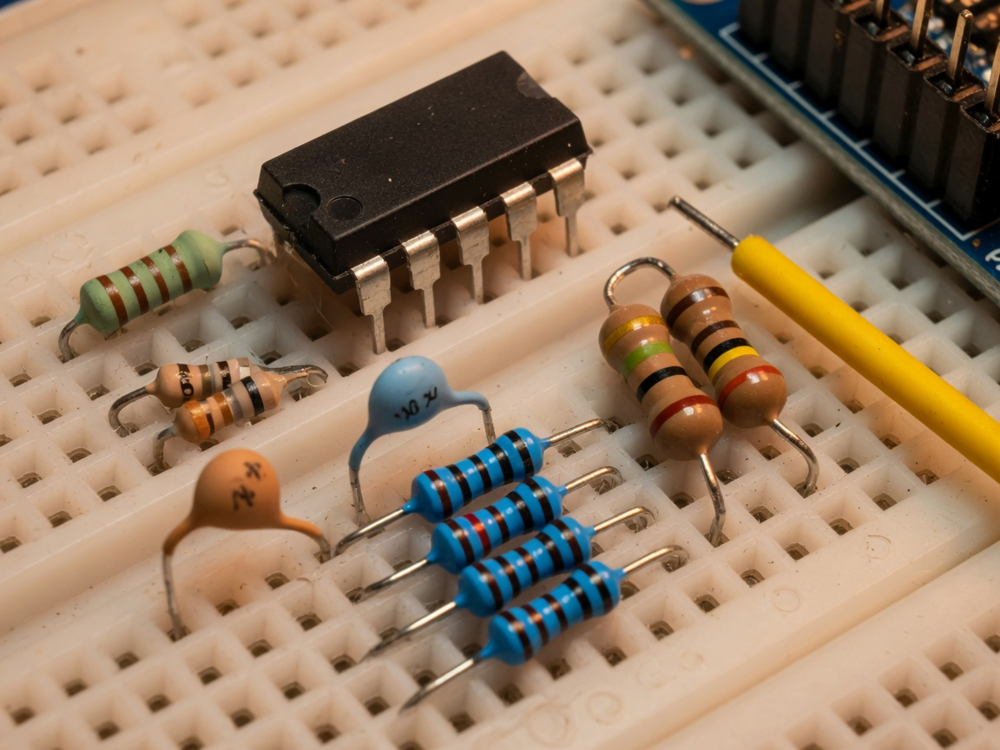
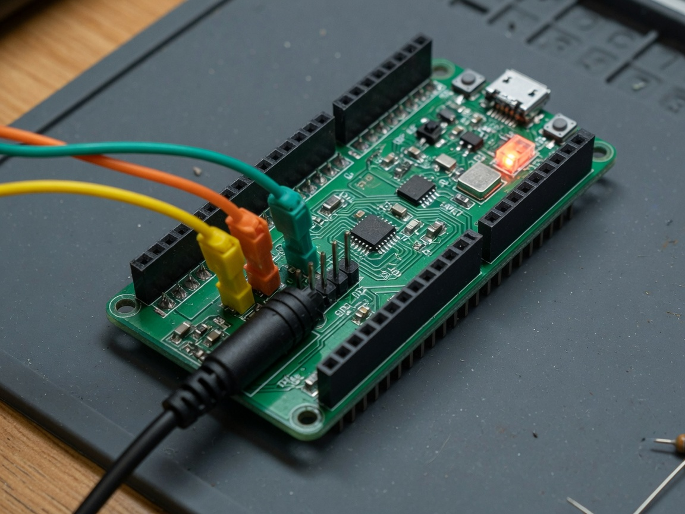

Afternoon breadboard. Three identical analog oscillators in a triangle. Coupling pots at 11.12 kΩ must lock. At 20 kΩ they must not. Pin D1D38A. Zero free parameters.

FSOT trits are (−1, 0, +1). A Chua node’s voltage already occupies three regions around ±1 V. The ESP32 12-bit ADC is the observer. The prediction is not a fitted onset: it is the golden-ratio operating point of three identical nodes on a closed loop.
Set all three pots there with a DMM. That is the lock test.
| Wrong (3% residual) | Right (overall_ok) |
|---|---|
| 1-D chain (ends ≠ middle) | Ring / triangle, degree 2 each |
| Matsumoto fitted a, b = −1.143, −0.714 | Ga, Gb from 2.2 kΩ ∥ 3.3 kΩ on the BOM |
| Lock cut 0.85 (invented) | trit ≥ φ⁻¹, MAD/amp ≤ φ⁻⁴ |
| σ = α/φ picked after the sweep | σ = φ named first |
Gates after the fix: open 0% lock, σ=1 0% lock, σ=φ 100% lock, σ=φ² 100% lock. BOM catalog residual at Electromagnetism: 0.0208%.
Full function list: hardware/BOM.md.
| Qty | Part | Used for |
|---|---|---|
| 1 | ESP32-WROOM-32 DevKit V1 (CP2102) | 12-bit ADC logger, GPIO 2 LED |
| 3 | TL082 / TL072 DIP-8 | Negative resistor. Needs ±9 V, not 3.3 V |
| 3 | 22 mH inductor | Chua L, audio band ~3.4 kHz |
| 3 | 10 nF 50 V | C1. α = C2/C1 = 10 |
| 3 | 100 nF 50 V | C2 |
| 3 | 1.80 kΩ 1% | Linear R |
| 6 | 220 Ω | NIC R1, R2 (two per node) |
| 3 | 2.2 kΩ | NIC inner branch (Ga) |
| 3 | 3.3 kΩ | NIC outer branch (Gb) |
| 6 | 22 kΩ | NIC R4, R5 |
| 6 | 100 kΩ 1% | 1.65 V bias into the ESP32 |
| 6 | 1N4148 | Clamp GPIO to 3V3 and GND |
| 3 | 20 kΩ linear pot | Triangle coupling. DMM-set to 11.12 kΩ |
| 2 | 9 V battery | Analog rails only |


Bias per node (the only ESP32 interface):
VC1 -- 100k --+-- GPIO 34/35/32
+-- 100k to GND
+-- 100k to 3V3
+ 1N4148 to 3V3 and to GND
vADC = 1.65 + 0.5 × VC1. A ±2 V swing stays in 0.65–2.65 V.
FSOT_RLC_HARDWARE_BOOT=ok.| Test | Pots | Must see |
|---|---|---|
| Unlocked | 20 kΩ (σ ≈ 0.9 < φ) | FSOT_RLC_LOCK=0, trits mix |
| Locked | 11.12 kΩ (σ = φ) | FSOT_RLC_LOCK=1, three trits equal |
You do not tune a pot until a residual vanishes. The prediction is the 11.12 kΩ setting.
python -m sim.run_sim python verification\verify_circuit.py z3 verification\circuit_bounds.smt2
Lean integers: formal/CircuitArrayPriors.lean. Same obligation shape as FSOT-2.1-Lean. Absorb later as an Electromagnetism / circuit panel in the hub.